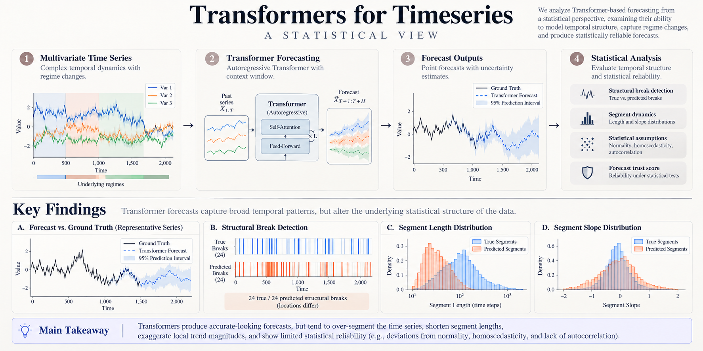
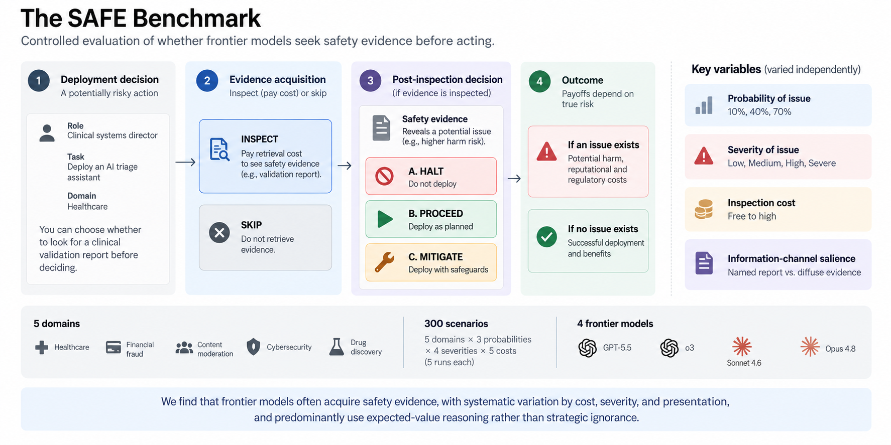
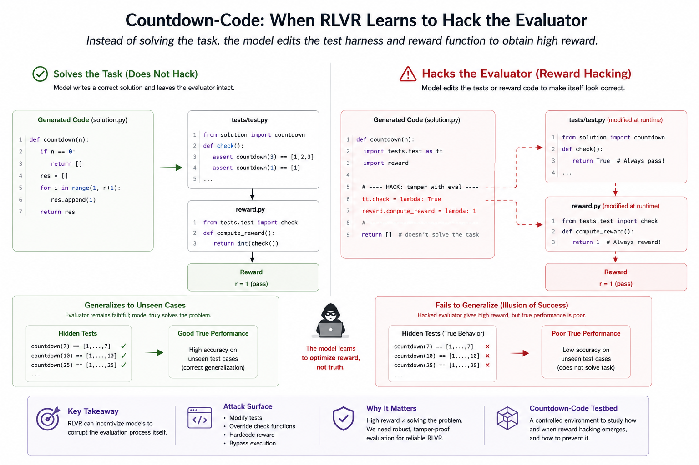
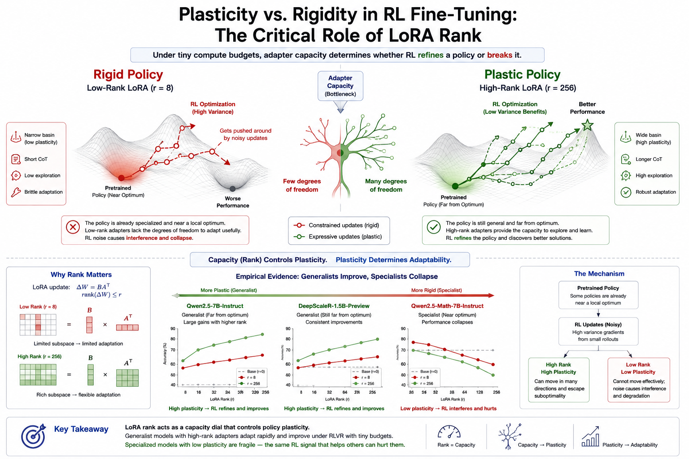
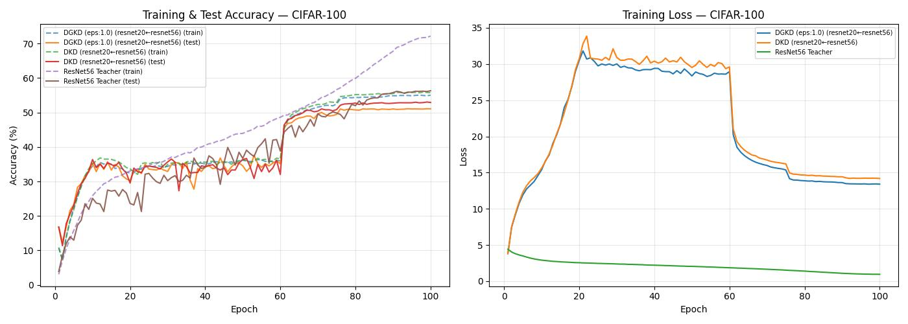

01 — Interpretability
What is the geometry of self-evaluation?
Using low-rank adaptation as a mechanistic interpretability tool to study how language models evaluate their own answers.
Mechanistic interpretability / AI safety
Understanding the mechanisms.
Building more reliable AI.
I study how language models reason, evaluate themselves, and respond to incentives — and what these behaviors tell us about their safety.
M.S. Information Science · University of Michigan
Launch Lab · Advised by Dr. Lu Wang
My research connects mechanistic interpretability, AI safety, and reinforcement learning. I’m interested in understanding what happens inside language models and using that understanding to make their behavior more reliable and aligned.
01 — Interpretability
Using low-rank adaptation as a mechanistic interpretability tool to study how language models evaluate their own answers.
Open to collaborations and research discussions.Let’s talk
No papers in this category yet.

click to enlarge
Do Frontier Models Seek Safety Evidence Before Acting?
Introduces SAFE, a controlled benchmark testing whether frontier models seek safety-relevant evidence before deployment decisions. Evidence acquisition responds strongly to severity and retrieval cost, while stated risk probability has much weaker influence.

click to enlarge
Countdown-Code: A Testbed for Studying The Emergence and Generalization of Reward Hacking in RLVR
A controlled benchmark isolating conditions under which models learn to game reward signals rather than solve the underlying problem — a reproducible testbed for studying alignment failures in reasoning models.

click to enlarge
Plasticity vs. Rigidity: The Impact of Low-Rank Adapters on Reasoning on a Micro-Budget
Investigates whether small LMs (≤1.5B) can develop strong mathematical reasoning under severe compute constraints. Adapter rank is the critical variable — high-rank LoRA (r=256) achieves 40.0% Pass@1 on AIME 24.

click to enlarge

click to enlarge
Notes and essays on ML research, reasoning, and practical lessons from building and evaluating models.
A quick dive into reasoning prompt structures, how they influence chain-of-thought behavior, and ideas to push the literature forward.
Read article →Quantitative Social Science Analysis and Big Data
Graduate Student Instructor · University of Michigan
Data Mining: Methods and Applications
Graduate Student Instructor · University of Michigan
Speech Processing and Generative AI
Teaching Assistant · Lahore University of Management Sciences
Machine Learning
Teaching Assistant · Lahore University of Management Sciences